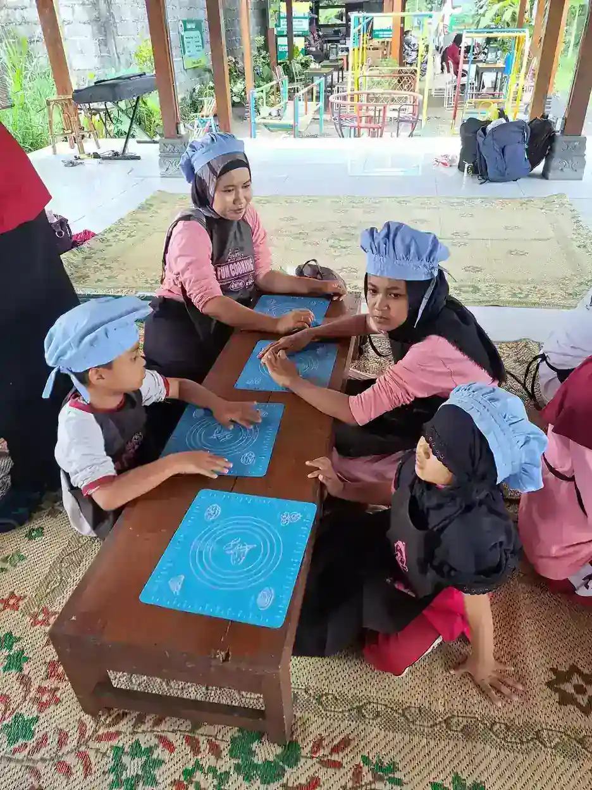

Jawaban singkat: UPI, UNY, UNJ, UNS, UNESA, dan UNP merupakan enam contoh PTN dengan program sarjana PLB atau Pendidikan Khusus yang dapat diperiksa melalui tautan resmi di bawah. Bedakan nama prodi dan jenjang, lalu cocokkan kurikulum, akses belajar, dan pengumuman penerimaan. Ini bukan daftar lengkap atau peringkat kampus.
Daftar Isi
- Memahami PLB, Pendidikan Khusus, dan jenjang kuliah
- Tabel enam PTN dan bukti program sarjananya
- UPI dan UNJ: membaca nama Pendidikan Khusus secara tepat
- UNY dan UNS: periksa kurikulum serta pengalaman lapangan
- UNESA dan UNP: nama prodi, lokasi, dan kecocokan belajar
- Apa yang dipelajari: dari asesmen sampai media adaptif
- Membayangkan tugas kuliah tanpa menyederhanakan peserta didik
- Akses kuliah bagi calon mahasiswa disabilitas
- Cara membandingkan kampus tanpa mengejar label terbaik
- Memeriksa jalur masuk, biaya, dan informasi yang berubah
- Prospek lulusan: peluang pendidikan, bukan jaminan pekerjaan
- Langkah awal belajar dan mengenal kegiatan YUKA
- Pertanyaan umum
Memahami PLB, Pendidikan Khusus, dan jenjang kuliah
Jurusan Pendidikan Luar Biasa PTN di Indonesia dapat ditemukan dengan nama Pendidikan Luar Biasa atau Pendidikan Khusus. Enam contoh perguruan tinggi negeri yang dibahas di sini ialah Universitas Pendidikan Indonesia, Universitas Negeri Yogyakarta, Universitas Negeri Jakarta, Universitas Sebelas Maret, Universitas Negeri Surabaya, dan Universitas Negeri Padang. Pembahasannya berfokus pada bukti keberadaan program sarjana dari laman resmi, bukan daftar seluruh kampus Indonesia atau pemeringkatan kampus terbaik.
Istilah PLB masih umum digunakan dalam pencarian calon mahasiswa, tetapi jangan memaksakan singkatan tersebut ke semua formulir. UPI menampilkan Pendidikan Khusus untuk sarjana, magister, dan doktor dalam bagian yang berbeda. UNJ juga memiliki halaman sebaran mata kuliah S1 Pendidikan Khusus. Sementara itu, nama Pendidikan Luar Biasa masih terlihat pada sejumlah laman kampus lain. Perbedaan nama perlu dibaca bersama profil, kurikulum, jenjang, dan portal penerimaan.
Bidang ini membahas bagaimana pendidikan dapat diakses oleh peserta didik dengan kebutuhan dukungan yang beragam. Fokusnya bukan menilai nilai diri seseorang melalui diagnosis, melainkan memahami hambatan belajar dan memperbaiki dukungan. Sebelum membandingkan kampus, kenali pengertian pendidikan khusus dan prinsip pendidikan inklusif. Keduanya membantu calon mahasiswa melihat hubungan antara ilmu yang dipelajari dengan pengalaman peserta didik sehari-hari, bukan hanya nama gelar pada akhir studi.
Tabel enam PTN dan bukti program sarjananya
Tabel berikut membedakan nama yang benar-benar terlihat pada sumber resmi dengan hal yang masih perlu ditanyakan kepada kampus. Tautan mengarah ke fakultas, program studi, atau direktori universitas. Keberadaan program tidak sama dengan kepastian pembukaan jalur penerimaan tertentu. Selalu periksa pengumuman pada tahun masuk yang Anda tuju dan jangan memakai tabel ini sebagai bukti kursi masih tersedia.
| PTN dan wilayah | Nama dan jenjang pada laman resmi | Bukti yang diperiksa | Hal penting untuk diverifikasi berikutnya |
|---|---|---|---|
| UPI, Bandung | S1 Pendidikan Khusus | Profil Pendidikan Khusus FIP UPI memisahkan bagian Sarjana, Magister, dan Doktor. | Pilih bagian sarjana dan kurikulum S1, bukan informasi S2 pada halaman yang sama. |
| UNY, Yogyakarta | Program Sarjana PLB (S1) | Situs Departemen PLB UNY menyediakan menu Program Sarjana PLB (S1), kurikulum, dan profil lulusan. | Konfirmasi kurikulum angkatan masuk, lokasi kegiatan, dan pengaturan praktik kependidikan. |
| UNJ, Jakarta | S1 Pendidikan Khusus | Sebaran mata kuliah S1 Pendidikan Khusus UNJ mencantumkan nama program dan mata kuliahnya. | Gunakan nama pada portal penerimaan terkini, bukan hanya halaman lama berjudul PLB. |
| UNS, Surakarta | S1 Pendidikan Luar Biasa | Direktori program UNS menyatakan jenjang sarjana dan menautkan situs prodi. | Cocokkan profil lulusan, rencana studi, dan ketentuan penerimaan dari sumber kampus. |
| UNESA, Surabaya | S1 Pendidikan Luar Biasa pada laman utama prodi | Laman resmi prodi UNESA menampilkan Program Studi S1 Pendidikan Luar Biasa. | Sebagian berita memakai Pendidikan Khusus. Konfirmasi nomenklatur pada portal penerimaan dan dokumen angkatan tujuan. |
| UNP, Padang | S1 Pendidikan Luar Biasa | Profil departemen FIP UNP secara eksplisit menyebut Program Studi Sarjana (S1) PLB. | Periksa lokasi perkuliahan program, akses perjalanan, dan informasi penerimaan sarjana terbaru. |
Urutan tabel bukan ukuran mutu atau peluang diterima. Artikel tidak menyamakan akreditasi universitas dengan akreditasi prodi dan tidak menampilkan klaim akreditasi yang memerlukan pemeriksaan masa berlaku tersendiri. Kampus di luar enam contoh tersebut mungkin juga mempunyai program relevan, tetapi tidak dimasukkan tanpa pembacaan sumber resminya dalam penelusuran ini.
UPI dan UNJ: membaca nama Pendidikan Khusus secara tepat
Pada laman FIP UPI, deskripsi sarjana menyebut Program Studi Pendidikan Khusus di tingkat S1. Halaman yang sama juga memuat deskripsi S2 dan S3 beserta tautan kurikulum masing-masing. Susunan seperti ini praktis bagi pembaca, tetapi dapat membingungkan bila seseorang hanya membaca cuplikan mesin pencari. Untuk calon mahasiswa sarjana, mulai dari bagian Sarjana dan pastikan tautan kurikulumnya memang mengarah ke S1.
Profil lulusan sarjana UPI memuat ranah pendidik, tenaga kependidikan, kelanjutan studi, dan kewirausahaan pendidikan khusus. Informasi ini berguna untuk mengenali arah program, bukan janji bahwa setiap lulusan langsung memperoleh semua peran tersebut. Tanyakan contoh kegiatan praktik, bimbingan akademik, serta bagaimana mahasiswa memperoleh umpan balik ketika menyusun program pembelajaran. Pertanyaan tentang pengalaman belajar lebih membantu daripada sekadar meminta daftar nama pekerjaan.
Di UNJ, halaman sebaran mata kuliah secara jelas berjudul S1 Pendidikan Khusus. Ada materi asesmen, pengembangan kurikulum, media pembelajaran adaptif, dan praktik keterampilan mengajar. Nama PLB tetap dapat muncul pada halaman lama atau istilah mata kuliah. Karena itu, cocokkan identitas program pada portal penerimaan dengan halaman akademik terkini. Untuk memahami konteks tempat lulusan dapat berkolaborasi, baca perbedaan sekolah inklusi dan SLB. Pilihan lingkungan kerja tidak boleh ditentukan hanya dari stereotip mengenai kemampuan peserta didik.

UNY dan UNS: periksa kurikulum serta pengalaman lapangan
Situs Departemen PLB UNY menampilkan menu Program Sarjana PLB (S1), termasuk kurikulum dan profil lulusan. Berita praktik kependidikan pada laman tersebut juga memperlihatkan bahwa kegiatan lapangan menjadi bagian yang layak diperiksa calon mahasiswa. Namun, satu berita kegiatan tidak mewakili seluruh pengalaman semua angkatan. Mintalah buku pedoman yang berlaku untuk tahun masuk Anda agar dapat membedakan kegiatan wajib, pilihan, dan kegiatan tambahan.
Pada UNS, direktori universitas menuliskan S1 Pendidikan Luar Biasa dengan jenjang sarjana. Situs prodi menjelaskan orientasi pendidikan khusus berlandaskan paradigma inklusif serta menyediakan menu rencana studi, capaian pembelajaran, dan magang. Tautan tersebut membantu menyusun pertanyaan yang lebih konkret: bagaimana mahasiswa belajar merancang bahan ajar yang aksesibel, siapa yang membimbing praktik, dan bagaimana hasil observasi diubah menjadi keputusan pengajaran.
Calon mahasiswa juga perlu menilai kesiapan menghadapi kerja kolaboratif. Praktik bukan sekadar hadir, mengambil dokumentasi, lalu menyelesaikan laporan. Mahasiswa perlu menghormati izin, melindungi informasi pribadi, dan memisahkan observasi pendidikan dari diagnosis klinis. Bacaan tentang peran orang tua dalam pendidikan inklusi dapat memperkaya pemahaman bahwa keluarga adalah mitra pengetahuan. Pengalaman keluarga tidak boleh dianggap kurang penting dibandingkan catatan mahasiswa yang baru mengenal seorang anak.
UNESA dan UNP: nama prodi, lokasi, dan kecocokan belajar
Halaman utama prodi UNESA yang diperiksa menampilkan S1 Pendidikan Luar Biasa. Di bagian pemberitaan, istilah S1 Pendidikan Khusus juga muncul. Artikel ini mempertahankan perbedaan tampilan tersebut secara terbuka, bukan menyimpulkan sendiri bahwa seluruh dokumen telah berganti nama. Saat mendaftar, ikuti nama dan kode yang benar-benar tercantum pada portal resmi serta tanyakan kepada pengelola bila ada perbedaan antarhalaman.
Visi keilmuan yang dipublikasikan UNESA menekankan pendidikan khusus yang inklusif, berbasis teknologi, adaptif, inovatif, serta berjiwa kewirausahaan. Calon mahasiswa dapat menjadikannya bahan dialog tentang bentuk proyek, teknologi asistif, dan kesempatan mengembangkan media. Istilah berbasis teknologi tidak otomatis berarti semua kegiatan memerlukan perangkat mahal. Yang perlu dinilai ialah apakah teknologi dipilih sesuai kebutuhan pengguna dan benar-benar memudahkan akses belajar.
Profil FIP UNP secara eksplisit mengidentifikasi program sarjana PLB. Halaman itu juga menerangkan lokasi departemen yang perlu diperhatikan ketika menghitung perjalanan dan tempat tinggal. Jangan menganggap semua prodi berada di gedung atau kawasan yang sama dengan kantor pusat universitas. Sebelum mengambil keputusan, tanyakan ruang kuliah, lokasi praktik, transportasi, serta dukungan akses. Kaitkan pertanyaan ini dengan pemahaman fasilitas pendidikan, sehingga penilaian tidak berhenti pada keindahan foto gedung atau kelengkapan brosur kampus.

Apa yang dipelajari: dari asesmen sampai media adaptif
Kurikulum pendidikan khusus menghubungkan teori pendidikan dengan keputusan pengajaran. Sebagai contoh nyata, sebaran mata kuliah UNJ memuat asesmen anak berkebutuhan khusus, pendidikan inklusif, evaluasi pembelajaran, media pembelajaran adaptif, serta metodologi penelitian. Nama mata kuliah tersebut menjadi petunjuk bidang belajar, bukan dasar menyatakan bahwa semua kampus memiliki isi, urutan semester, atau penekanan yang sama.
Asesmen pendidikan bertujuan memahami kekuatan, kebutuhan, cara berkomunikasi, dan hambatan dalam kegiatan belajar. Hasilnya membantu memilih tujuan dan dukungan yang relevan. Misalnya, kesulitan menyelesaikan lembar tugas dapat berkaitan dengan format yang tidak aksesibel, bukan semata-mata kurangnya kemampuan. Mahasiswa perlu belajar menguji asumsi, mengamati dengan hati-hati, dan mencari cara agar peserta didik dapat menunjukkan pemahamannya melalui bentuk respons yang sesuai.
Materi komunikasi, Braille, atau bahasa isyarat perlu dibaca dari kurikulum kampus masing-masing. Tidak tepat menganggap semua mahasiswa otomatis mahir setelah mengikuti satu mata kuliah. Kompetensi memerlukan latihan, umpan balik, dan pengalaman bersama pengguna. Pelajari keragaman disabilitas sensorik sebagai pengantar, sambil mengingat bahwa kebutuhan seorang individu tidak dapat ditentukan hanya dari kategorinya. Dalam proyek media adaptif, tanyakan siapa pengguna, hambatan apa yang dikurangi, serta bagaimana pengguna dapat menyampaikan bahwa media tersebut belum membantu.
Membayangkan tugas kuliah tanpa menyederhanakan peserta didik
Untuk menguji kecocokan minat, bayangkan Anda diminta menyiapkan kegiatan membaca bersama bagi kelompok dengan kebutuhan komunikasi berbeda. Tugasnya bukan membuat semua peserta memberikan respons yang sama. Anda mungkin perlu menyediakan teks yang lebih mudah dibaca, bahan visual, pilihan jawaban, atau cara mengakses cerita tanpa mengandalkan penglihatan. Contoh ini adalah ilustrasi proses berpikir pendidikan, bukan tugas resmi yang diklaim berlaku di seluruh kampus.
Setelah kegiatan, evaluasi tidak cukup berupa catatan peserta patuh atau tidak patuh. Periksa apakah instruksi dapat dipahami, alat tersedia, waktu cukup, dan peserta merasa aman meminta bantuan. Bila seseorang memilih berhenti, keputusan itu perlu dihormati serta dipahami konteksnya. Mahasiswa juga belajar membedakan target yang bermanfaat bagi peserta dengan target yang hanya memudahkan orang dewasa mengatur ruangan.
Kerja kolaboratif dapat melibatkan guru kelas, keluarga, pendamping, dan profesional lain sesuai kebutuhan. Membaca co-teaching dalam kelas inklusi serta dukungan teman sebaya membantu calon mahasiswa melihat variasi strategi. Keduanya bukan pengganti dukungan individual yang memang diperlukan. Keputusan pengajaran harus dapat dijelaskan, dievaluasi, dan diperbaiki, bukan dipertahankan hanya karena sudah tercantum dalam rencana awal atau dianggap metode paling populer.

Akses kuliah bagi calon mahasiswa disabilitas
Adanya program PLB tidak otomatis membuktikan seluruh kampus sudah aksesibel bagi semua mahasiswa. Calon mahasiswa disabilitas berhak mengajukan pertanyaan praktis tentang pengalaman kuliah yang akan dijalani. Hubungi layanan penerimaan dan unit layanan disabilitas atau pengelola dukungan mahasiswa, lalu tanyakan bagaimana kebutuhan akses dicatat dan ditindaklanjuti. Artikel ini tidak menyatakan bahwa setiap kampus dalam tabel memiliki fasilitas atau layanan yang identik.
Untuk akses fisik, periksa perjalanan antarruang, toilet, lift bila diperlukan, dan akses menuju lokasi praktik. Untuk akses informasi, tanyakan dokumen digital yang dapat dibaca perangkat bantu, takarir, materi sebelum perkuliahan, serta bentuk ujian yang sesuai. Mahasiswa Tuli dapat menanyakan dukungan komunikasi berdasarkan kebutuhannya sendiri. Jangan menganggap semua orang Tuli memilih cara komunikasi yang sama atau harus menyesuaikan diri tanpa dukungan lingkungan.
Sebaiknya simpan jawaban tertulis dan tanyakan pihak yang bertanggung jawab bila dukungan belum tersedia. Jelaskan kebutuhan fungsional yang relevan tanpa merasa wajib membagikan seluruh riwayat pribadi kepada setiap orang. Percakapan tentang prinsip inklusi sosial perlu diwujudkan dalam prosedur yang jelas. Tanyakan pula akses kegiatan lapangan sejak awal agar masalah tidak baru muncul ketika penempatan sudah ditentukan. Memeriksa akses bukan meminta kemudahan tanpa alasan, melainkan memastikan kesempatan belajar dapat digunakan secara setara.
Cara membandingkan kampus tanpa mengejar label terbaik
Mulailah dengan tujuan pribadi: apakah Anda tertarik pada pengajaran, pengembangan media, dukungan komunikasi, penelitian pendidikan, atau pengelolaan program belajar? Tidak perlu sudah memiliki satu pilihan karier yang kaku, tetapi tujuan sementara membantu menyaring informasi. Setelah itu, bandingkan kurikulum, bentuk praktik, dukungan akademik, dan akses kehidupan sehari-hari. Nama universitas yang terkenal belum tentu paling cocok dengan kebutuhan belajar dan kondisi keluarga Anda.
Buat catatan untuk setiap kampus dengan kolom bukti dan pertanyaan terbuka. Pada kolom bukti, tulis tautan kurikulum resmi serta tanggal Anda membacanya. Pada kolom pertanyaan, tulis hal yang belum jelas, seperti pola supervisi praktik, pilihan mata kuliah, atau akses perpustakaan. Pisahkan jawaban resmi dari pengalaman seorang alumni. Pengalaman alumni tetap berguna, tetapi bukan jaminan bahwa semua mahasiswa atau angkatan akan mengalami hal yang sama.
Perhatikan pula etika program dalam membicarakan penyandang disabilitas. Kampus yang sesuai minat Anda seharusnya dapat menjelaskan bagaimana suara peserta didik dan keluarga dilibatkan dalam pembelajaran mahasiswa. Bacaan perencanaan yang berpusat pada individu dapat menjadi kerangka pertanyaan. Jangan memilih hanya karena program digambarkan mudah masuk, cepat mendapat pekerjaan, atau cocok bagi orang yang sabar. Bidang ini memerlukan kemampuan akademik, refleksi, komunikasi, tanggung jawab, dan kesediaan terus belajar dari orang yang didukung.

Memeriksa jalur masuk, biaya, dan informasi yang berubah
Setelah memiliki pilihan sementara, buka portal penerimaan resmi tiap universitas. Cocokkan nama program, jenjang S1, lokasi, dan tahun pengumuman. Halaman profil prodi menjelaskan identitas akademik, sedangkan pengumuman penerimaan menjelaskan cara mendaftar. Kedua jenis sumber tersebut saling melengkapi, tetapi tidak dapat saling menggantikan. Halaman yang masih dapat dibuka belum tentu berisi ketentuan untuk tahun penerimaan yang Anda butuhkan.
Artikel ini tidak memberikan angka biaya, kuota, peminat, atau nilai kelulusan. Angka dari daftar lama dapat menyesatkan bila jalur seleksi, tahun, atau dasar perhitungannya tidak jelas. Bila ingin membandingkan biaya, pisahkan biaya pendidikan, tempat tinggal, transportasi, bahan praktik, serta kebutuhan akses. Mintalah penjelasan resmi tentang ketentuan yang berlaku, jangan menyimpulkan total kebutuhan hanya dari satu angka yang tersebar di media sosial.
Jangan pula menganggap nama program yang sama berarti persyaratan semua jalur sama. Periksa dokumen, tenggat, dan mekanisme pengaduan pada pengumuman masing-masing. Bila ada syarat yang belum jelas bagi calon mahasiswa disabilitas, tanyakan secara tertulis kepada panitia resmi dan layanan terkait. Hindari membayar pihak yang menjanjikan kelulusan. Keputusan yang baik bertumpu pada informasi yang dapat ditelusuri, bukan rasa takut ketinggalan atau klaim bahwa tersedia jalan pintas untuk masuk ke perguruan tinggi negeri tertentu.
Prospek lulusan: peluang pendidikan, bukan jaminan pekerjaan
Profil lulusan yang dipublikasikan kampus menunjukkan arah kompetensi yang hendak dibangun. Ranahnya dapat mencakup pendidik pendidikan khusus, tenaga kependidikan, pengembangan media, pengelolaan program, kewirausahaan pendidikan, atau kelanjutan studi. Laman prodi UNS, misalnya, membahas pendidik, asisten peneliti, instruktur, pengelola, dan kewirausahaan. Daftar tersebut perlu dibaca sebagai arah pendidikan, bukan janji bahwa lulusan langsung memenuhi semua persyaratan setiap jabatan.
Bekerja sebagai guru dapat melibatkan ketentuan pendidikan profesi, sertifikasi, maupun persyaratan pemberi kerja sesuai jalurnya. Menjadi ASN memerlukan proses dan ketentuan seleksi tersendiri. Begitu pula profesi terapi kesehatan memiliki pendidikan, kompetensi, dan kewenangan yang tidak otomatis diperoleh dari gelar sarjana PLB. Mempelajari dukungan komunikasi atau gerak dalam konteks pendidikan tidak sama dengan memperoleh izin menjalankan seluruh tindakan klinis.
Bangun portofolio yang menunjukkan kemampuan merencanakan, menjelaskan alasan strategi, menerima umpan balik, dan memperbaiki akses belajar tanpa membuka data pribadi peserta didik. Mengenal peran shadow teacher membantu memahami salah satu bentuk pendampingan, tetapi peran itu tidak identik dengan semua tugas guru pendidikan khusus. Prospek dipengaruhi kompetensi, kebutuhan lembaga, wilayah, dan proses seleksi. Pilih bidang ini karena ingin mengembangkan praktik pendidikan yang bertanggung jawab, bukan karena dijanjikan pekerjaan pasti atau penghasilan tertentu setelah lulus.
Langkah awal belajar dan mengenal kegiatan YUKA
Sebelum mendaftar, pilih dua atau tiga program untuk dibaca lebih mendalam, lalu susun pertanyaan berdasarkan kebutuhan Anda. Simpan tautan profil, kurikulum, dan portal penerimaan dalam catatan yang terpisah. Ajak keluarga membahas kebutuhan biaya serta dukungan hidup tanpa mengubah percakapan menjadi perlombaan nama kampus. Pilihan yang realistis dapat tetap ambisius bila didasarkan pada tujuan dan bukti yang jelas.
Anda juga dapat mengenal pendidikan inklusif melalui bacaan, kegiatan komunitas yang etis, dan percakapan bersama pendidik maupun penyandang disabilitas. Jika mengikuti kegiatan sukarela, patuhi arahan pengelola, persetujuan peserta, dan batas kompetensi. Jangan menjadikan anak sebagai objek latihan, mengambil foto tanpa izin, atau membagikan cerita pribadi untuk membangun portofolio. Pengalaman yang bermakna dimulai dari mendengarkan, bukan merasa sudah memahami kebutuhan seseorang setelah pertemuan singkat.
Untuk mengenal kegiatan pendidikan dan dukungan keluarga di YUKA, lihat informasi program YUKA atau hubungi tim YUKA untuk menanyakan informasi yang tersedia. YUKA bukan panitia penerimaan keenam universitas dan artikel ini tidak menawarkan jalur masuk kampus. Bila ingin membantu akses pendidikan anak, pelajari dukungan donasi pendidikan sesuai kemampuan. Memperluas kesempatan belajar adalah kerja bersama yang dapat dilakukan sambil tetap menghormati pilihan, privasi, serta martabat setiap peserta didik dan keluarganya.
Pertanyaan umum tentang jurusan PLB di PTN
PTN mana yang memiliki jurusan Pendidikan Luar Biasa di Indonesia?
Contoh yang diperiksa melalui laman resmi adalah UPI, UNY, UNJ, UNS, UNESA, dan UNP. Nama program yang ditampilkan dapat berupa Pendidikan Luar Biasa atau Pendidikan Khusus. Keenam contoh ini bukan daftar lengkap, bukan peringkat, dan bukan pengumuman bahwa pendaftaran sedang dibuka.
Apakah Pendidikan Luar Biasa sama dengan Pendidikan Khusus?
Keduanya digunakan dalam rumpun pendidikan bagi peserta didik dengan kebutuhan dukungan yang beragam, tetapi nama resmi program harus mengikuti kampus dan jenjangnya. UPI serta UNJ menampilkan Pendidikan Khusus, sedangkan laman program UNS, UNY, UNESA, dan UNP yang dirujuk menggunakan Pendidikan Luar Biasa. Periksa kembali nama pada portal pendaftaran.
Apakah lulusan SMA mendaftar ke S1 atau S2 Pendidikan Khusus?
Calon mahasiswa dari jenjang sekolah menengah perlu mencari program sarjana atau S1 dan memeriksa syarat masuk resminya. S2 adalah magister dengan persyaratan pendidikan sebelumnya tersendiri. Munculnya laman S2 Pendidikan Khusus tidak cukup untuk membuktikan adanya penerimaan S1 pada kampus yang sama.
Apa yang dipelajari dalam jurusan PLB?
Bidang belajar dapat mencakup landasan pendidikan, asesmen kebutuhan belajar, pengembangan kurikulum, media adaptif, komunikasi, pendidikan inklusif, evaluasi pembelajaran, penelitian, dan praktik mengajar. Sebaran mata kuliah resmi UNJ menjadi salah satu contoh dalam artikel ini. Nama, urutan, serta pilihan mata kuliah tidak harus sama pada setiap kampus.
Apakah lulusan PLB otomatis menjadi terapis atau ASN?
Tidak. Kelulusan PLB bukan jaminan pekerjaan, pengangkatan ASN, atau kewenangan menjalankan semua profesi terapi kesehatan. Lowongan guru, pendidikan profesi, sertifikasi, dan profesi kesehatan mempunyai persyaratan masing-masing. Pilihan karier harus dicocokkan dengan kompetensi, aturan profesi, kebutuhan lembaga, dan proses seleksi yang berlaku.
Bagaimana calon mahasiswa disabilitas memeriksa akses kuliah?
Tanyakan kepada layanan penerimaan dan unit layanan disabilitas mengenai akses ruang, materi digital, komunikasi, ujian, praktik lapangan, serta prosedur permohonan akomodasi. Sampaikan kebutuhan dukungan yang relevan dan minta penjelasan tertulis. Adanya prodi PLB tidak otomatis menjamin seluruh bentuk akses sudah tersedia di setiap kegiatan.
Di mana mengecek biaya, kuota, dan jadwal masuk PLB?
Gunakan portal penerimaan resmi universitas dan pengumuman jalur seleksi pada tahun yang dituju. Cocokkan nama program, jenjang, lokasi, biaya, serta tanggal pengumuman. Artikel ini tidak mencantumkan angka biaya atau kuota karena informasi tersebut bergantung pada jalur dan tahun penerimaan serta dapat berubah.
Bacaan Terkait
Sumber dan Referensi
- FIP UPI: Pendidikan Khusus, bagian Sarjana, Magister, dan Doktor
- Departemen PLB UNY: menu Program Sarjana PLB (S1)
- PLB UNY: kurikulum program studi
- FIP UNJ: sebaran mata kuliah S1 Pendidikan Khusus
- UNS: direktori S1 Pendidikan Luar Biasa
- PLB FKIP UNS: profil dan tujuan program
- UNESA: laman S1 Pendidikan Luar Biasa
- FIP UNP: profil S1 Pendidikan Luar Biasa
Catatan: Artikel ini bersifat edukasi umum dan bukan pengganti konsultasi dengan psikolog, tenaga kesehatan, atau petugas layanan sosial resmi. Laman resmi diperiksa 16 Oktober 2026. Nama program mengikuti tampilan sumber yang dirujuk; nomenklatur dan penerimaan perlu dikonfirmasi kembali pada portal kampus untuk tahun yang dituju.